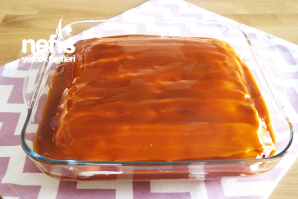

trileçe
İÇİNDEKİLER
- 5 adet yumurta
- 1 su bardağından 1 parmak eksik şeker
- 1,5 su bardağı un
- 1 paket kabartma tozu
- 1 paket vanilya
- 3,5 su bardağı süt
- 3 yemek kaşığı toz şeker
- 200 g sıvı krema
- 1 yemek kaşığı tereyağı
- 200 g sıvı krema
YAPILIŞ
- Kremşantili trileçe yapmak için öncelikle karıştırma kabımıza yumurta ve toz şekeri alıp boza kıvamına gelene kadar çırpalım.
- Un, kabartma tozu ve vanilyayı ekleyip spatulayla alttan üste doğru karıştırıp yağlı kağıt serili fırın kabına dökelim.
- 170°lik fırında 10 dk, sonra ısıyı 150° düşürüp yaklaşık 30 dk pişirelim.
- Trileçenin sütlü sosu için uygun bir kapta süt, toz şeker ve sıvı kremayı çırpıp buzdolabında bekletelim.
- Karamelli sosu için, tavamıza şekeri alıp orta ateşte sürekli karıştırarak erimesini sağlayalım.
- Açık bir renk alınca 1 yemek kaşığı tereyağını ekleyelim ve yağın erimesini sağlayalım.
- Üzerine sos için kuru nane eritilmiş tereyağında kızdırılarak gezdirilir. Yayla çorbamız servise hazır. Afiyet olsun.
- Ilımış olan kekimizi ters çevirip yağlı kağıdı çıkarıp çatalla delikler açalım.
- Soğuk şerbetimizi kekin üzerine dökelim.
- 1 paket köpürtülmüş krem şantiden süslemek için biraz ayırıp kalanını kekin üzerine yayalım.
- Ilımış olan karamel sosumuzu krem şantinin üzerine dökelim.
- Ayırmış olduğumuz krem şanti ile süsleyip kürdan ile şekil verelim.
- Ayırmış olduğumuz krem şanti ile süsleyip kürdan ile şekil verelim.
- Muhteşem karamelli trileçemizi deneyeceklere şimdiden afiyet olsun.
